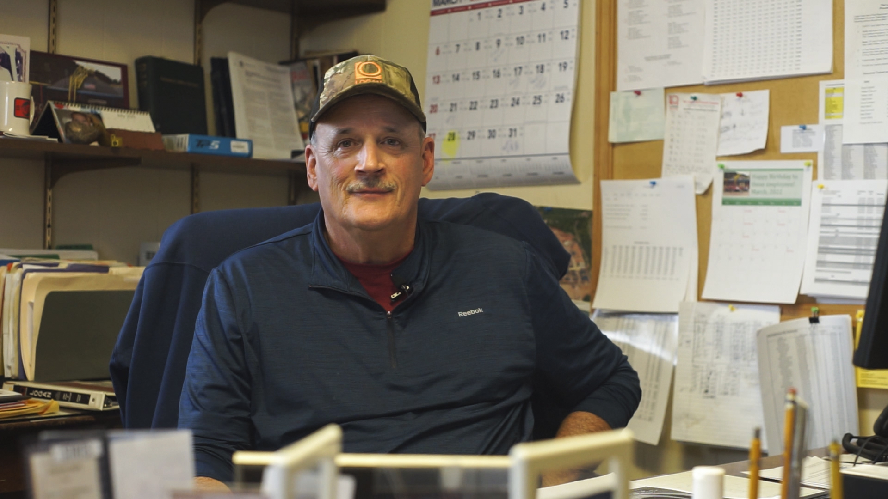

Photos by Isabella Huelsman

Photo By Isabella Huelsman
Bill Heft, vice president of operations, has worked with Logan Clay Products for 40 years, and takes great pride in the company
Logan Clay Products LLC
Logan Clay Products has been in operation for over 135 years. They found their start in bricks, which paved and built the towns in the area in the 1800s. Once the demand for bricks passed, the factory modernized to produce other clay products, mainly pipes. Though the product has changed, the resource remains the same, and there is still an abundance of clay in the area.
Today, the company produces thousands of tons of products every year. It is one of few clay pipe manufacturers left in the area. Bill Heft, Logan local, and vice president of operations, says the quality of the product is what’s made them so successful.
The company employs around 65 people, with some shifts working around the clock to supervise the firing of beehive kilns. When the pipe is being made, clay is extruded, or pushed through presses to shape the pipe by press operators. After the pipes are extruded, they are moved by forklift and set in drying rooms. Then the set crew arranges the dried pipe in the kilns, and the firemen oversee the firing. The draw crew then takes the fired product from the kilns for finishing touches. Other staff will cut the fired pipes, and finish the ends so they can be joined together. Four to five kilns with around 100 tons of product each, are fired and finished every week.
”Mom and dad lived here in town. My grandpa worked for the railroad, grandma was a housewife. … Prior to that their parents lived here. We've always lived here. My brother works here, and his two sons. … It’s a family oriented business.”